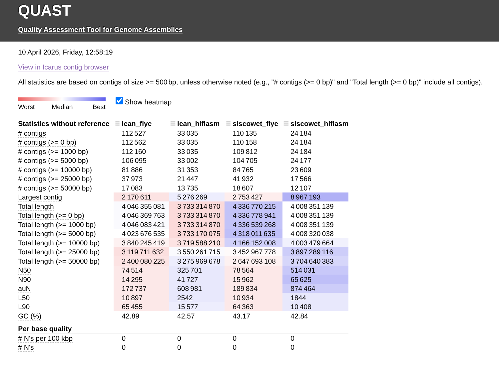
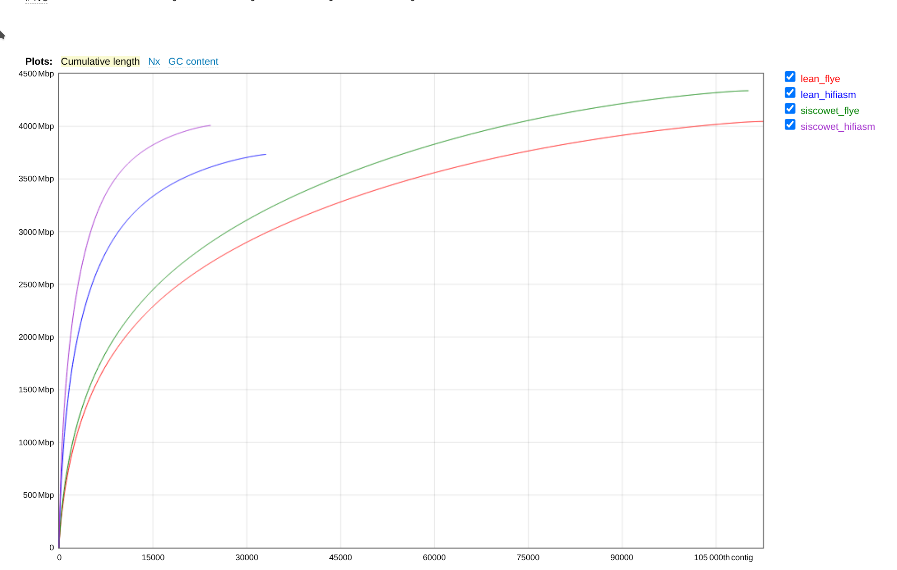

INTRO
I previously assembled the Lake Trout genomes for the lean and siscowet ecotypes using both Flye and hifiasm with PacBio data (GitHub Issue). I wanted to compare the two assemblies to see which one was better. I used QUAST to compare the assemblies for some basic stats.
Notebook links to assemblies:
Below is the rendered markdown from 13.2-genome-assembly-comparisons.Rmd.
1 BACKGROUND
This will use QUAST (Mikheenko et al. 2018, 2023) to evaluate the two sets of PacBio genome assemblies produced with Flye(GitHub) and hifiasm (GitHub) for both ecotypes.
2 SETUP
2.1 Libraries
library(knitr)
library(tidyverse)## ── Attaching core tidyverse packages ──────────────────────── tidyverse 2.0.0 ──
## ✔ dplyr 1.1.4 ✔ readr 2.1.5
## ✔ forcats 1.0.0 ✔ stringr 1.5.1
## ✔ ggplot2 3.5.2 ✔ tibble 3.2.1
## ✔ lubridate 1.9.4 ✔ tidyr 1.3.1
## ✔ purrr 1.0.4
## ── Conflicts ────────────────────────────────────────── tidyverse_conflicts() ──
## ✖ dplyr::filter() masks stats::filter()
## ✖ dplyr::lag() masks stats::lag()
## ℹ Use the conflicted package (<http://conflicted.r-lib.org/>) to force all conflicts to become errorslibrary(reticulate)
knitr::opts_chunk$set(
echo = TRUE, # Display code chunks
eval = FALSE, # Evaluate code chunks
results = "hold", # Hold outputs and show them after the full code chunk
warning = FALSE, # Hide warnings
collapse = FALSE, # Keep code and output in separate blocks
warning = FALSE, # Hide warnings
message = FALSE, # Hide messages
comment = "##" # Prefix output lines with '##' so output is visually distinct
)2.2 Set R variables
# OUTPUT DIRECTORY
output_dir <- "../output/13.2-genome-assembly-comparisons"
# INPUT FILES
flye_lean_fasta <- "../output/13.1-genome-assembly-lean/snam-lean-pb-flye-assembly.fasta"
flye_siscowet_fasta <- "../output/13.1-genome-assembly-siscowet/snam-siscowet-pb-flye-assembly.fasta"
hifiasm_lean_fasta <- "../output/13.1-hifiasm-genome-assembly-lean/pb-hifiasm-lean-assembly.fa"
hifiasm_siscowet_fasta <- "../output/13.1-hifiasm-genome-assembly-siscowet/pb-hifiasm-siscowet-assembly.fa"
# SETTINGS
threads <- "40"
# Export these as environment variables for bash chunks.
Sys.setenv(
flye_lean_fasta = flye_lean_fasta,
flye_siscowet_fasta = flye_siscowet_fasta,
hifiasm_lean_fasta = hifiasm_lean_fasta,
hifiasm_siscowet_fasta = hifiasm_siscowet_fasta,
output_dir = output_dir,
threads = threads
)3 Run QUAST
# Make output directory, if it doesn't exist
mkdir --parents "${output_dir}"
quast.py \
"${flye_lean_fasta}" \
"${hifiasm_lean_fasta}" \
"${flye_siscowet_fasta}" \
"${hifiasm_siscowet_fasta}" \
--output-dir "${output_dir}" \
--threads "${threads}" \
--labels "lean_flye, lean_hifiasm, siscowet_flye, siscowet_hifiasm"## /srlab/programs/miniforge3-24.7.1-0/bin/quast.py:4: DeprecationWarning: pkg_resources is deprecated as an API. See https://setuptools.pypa.io/en/latest/pkg_resources.html
## __import__('pkg_resources').run_script('quast==5.3.0', 'quast.py')
## /srlab/programs/miniforge3-24.7.1-0/lib/python3.12/site-packages/quast-5.3.0-py3.12.egg/EGG-INFO/scripts/quast.py ../output/13.1-genome-assembly-lean/snam-lean-pb-flye-assembly.fasta ../output/13.1-hifiasm-genome-assembly-lean/pb-hifiasm-lean-assembly.fa ../output/13.1-genome-assembly-siscowet/snam-siscowet-pb-flye-assembly.fasta ../output/13.1-hifiasm-genome-assembly-siscowet/pb-hifiasm-siscowet-assembly.fa --output-dir ../output/13.2-genome-assembly-comparisons --threads 40 --labels lean_flye, lean_hifiasm, siscowet_flye, siscowet_hifiasm
##
## Version: 5.3.0
##
## System information:
## OS: Linux-4.18.0-513.18.1.el8_9.x86_64-x86_64-with-glibc2.39 (linux_64)
## Python version: 3.12.5
## CPUs number: 192
##
## Started: 2026-04-10 12:49:08
##
## Logging to /mmfs1/gscratch/scrubbed/samwhite/gitrepos/RobertsLab/project-lake-trout/output/13.2-genome-assembly-comparisons/quast.log
##
## CWD: /mmfs1/gscratch/scrubbed/samwhite/gitrepos/RobertsLab/project-lake-trout/code
## Main parameters:
## MODE: default, threads: 40, min contig length: 500, min alignment length: 65, min alignment IDY: 95.0, \
## ambiguity: one, min local misassembly length: 200, min extensive misassembly length: 1000
##
## WARNING: Can't draw plots: python-matplotlib is missing or corrupted.
##
## Contigs:
## Pre-processing...
## 1 ../output/13.1-genome-assembly-lean/snam-lean-pb-flye-assembly.fasta ==> lean_flye
## 2 ../output/13.1-hifiasm-genome-assembly-lean/pb-hifiasm-lean-assembly.fa ==> lean_hifiasm
## 3 ../output/13.1-genome-assembly-siscowet/snam-siscowet-pb-flye-assembly.fasta ==> siscowet_flye
## 4 ../output/13.1-hifiasm-genome-assembly-siscowet/pb-hifiasm-siscowet-assembly.fa ==> siscowet_hifiasm
##
## 2026-04-10 12:51:06
## Running Basic statistics processor...
## Contig files:
## 1 lean_flye
## 2 lean_hifiasm
## 3 siscowet_flye
## 4 siscowet_hifiasm
## Calculating N50 and L50...
## 1 lean_flye, N50 = 74514, L50 = 10897, auN = 172736.7, Total length = 4046355081, GC % = 42.89, # N's per 100 kbp = 0.00
## 2 lean_hifiasm, N50 = 325701, L50 = 2542, auN = 608980.5, Total length = 3733314870, GC % = 42.57, # N's per 100 kbp = 0.00
## 3 siscowet_flye, N50 = 78564, L50 = 10934, auN = 189833.9, Total length = 4336770215, GC % = 43.17, # N's per 100 kbp = 0.00
## 4 siscowet_hifiasm, N50 = 514031, L50 = 1844, auN = 874464.1, Total length = 4008351139, GC % = 42.84, # N's per 100 kbp = 0.00
## Done.
##
## NOTICE: Genes are not predicted by default. Use --gene-finding or --glimmer option to enable it.
##
## 2026-04-10 12:56:51
## Creating large visual summaries...
## This may take a while: press Ctrl-C to skip this step..
## 1 of 1: Creating Icarus viewers...
## Done
##
## 2026-04-10 12:58:19
## RESULTS:
## Text versions of total report are saved to /mmfs1/gscratch/scrubbed/samwhite/gitrepos/RobertsLab/project-lake-trout/output/13.2-genome-assembly-comparisons/report.txt, report.tsv, and report.tex
## Text versions of transposed total report are saved to /mmfs1/gscratch/scrubbed/samwhite/gitrepos/RobertsLab/project-lake-trout/output/13.2-genome-assembly-comparisons/transposed_report.txt, transposed_report.tsv, and transposed_report.tex
## HTML version (interactive tables and plots) is saved to /mmfs1/gscratch/scrubbed/samwhite/gitrepos/RobertsLab/project-lake-trout/output/13.2-genome-assembly-comparisons/report.html
## Icarus (contig browser) is saved to /mmfs1/gscratch/scrubbed/samwhite/gitrepos/RobertsLab/project-lake-trout/output/13.2-genome-assembly-comparisons/icarus.html
## Log is saved to /mmfs1/gscratch/scrubbed/samwhite/gitrepos/RobertsLab/project-lake-trout/output/13.2-genome-assembly-comparisons/quast.log
##
## Finished: 2026-04-10 12:58:19
## Elapsed time: 0:09:10.519647
## NOTICEs: 1; WARNINGs: 1; non-fatal ERRORs: 0
##
## Thank you for using QUAST!RESULTS
All output files are here:
QUAST Report (HTML):
| Assembly | lean_flye | lean_hifiasm | siscowet_flye | siscowet_hifiasm |
|---|---|---|---|---|
| # contigs (>= 0 bp) | 112562 | 33035 | 110158 | 24184 |
| # contigs (>= 1000 bp) | 112160 | 33035 | 109812 | 24184 |
| # contigs (>= 5000 bp) | 106095 | 33002 | 104705 | 24177 |
| # contigs (>= 10000 bp) | 81886 | 31353 | 84765 | 23609 |
| # contigs (>= 25000 bp) | 37973 | 21447 | 41932 | 17566 |
| # contigs (>= 50000 bp) | 17083 | 13735 | 18607 | 12107 |
| Total length (>= 0 bp) | 4046369763 | 3733314870 | 4336778941 | 4008351139 |
| Total length (>= 1000 bp) | 4046083421 | 3733314870 | 4336539268 | 4008351139 |
| Total length (>= 5000 bp) | 4023676535 | 3733170075 | 4318011635 | 4008320038 |
| Total length (>= 10000 bp) | 3840245419 | 3719588210 | 4166152008 | 4003479664 |
| Total length (>= 25000 bp) | 3119711632 | 3550261715 | 3452967778 | 3897289116 |
| Total length (>= 50000 bp) | 2400080225 | 3275969678 | 2647693108 | 3704640383 |
| # contigs | 112527 | 33035 | 110135 | 24184 |
| Largest contig | 2170611 | 5276269 | 2753427 | 8967193 |
| Total length | 4046355081 | 3733314870 | 4336770215 | 4008351139 |
| GC (%) | 42.89 | 42.57 | 43.17 | 42.84 |
| N50 | 74514 | 325701 | 78564 | 514031 |
| N90 | 14295 | 41727 | 15962 | 65625 |
| auN | 172736.7 | 608980.5 | 189833.9 | 874464.1 |
| L50 | 10897 | 2542 | 10934 | 1844 |
| L90 | 65455 | 15577 | 64363 | 10408 |
| # N’s per 100 kbp | 0 | 0 | 0 | 0 |


DISCUSSION
In general, it appears that the hifiasm assemblies are better than the flye assemblies, with higher N50 and larger contigs. However, the Flye assemblies have a higher total length (~7% more).